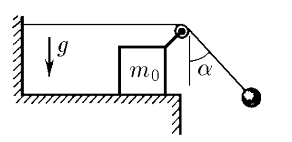

$2.1.49$
A load is suspended from the free end of the thread attached to the wall and thrown over the roller. The roller is fixed on a bar of mass $m_0$, which can slide along a horizontal plane without friction. At the initial moment, the thread with the load is deflected from the vertical by an angle \alpha and then released. Determine the acceleration of the bar if the angle formed by the thread with the vertical does not change during the movement of the system. What is the weight of the cargo?

For problem 2.1.49
Solution
Forces acting on the system
Newton's second law of motion:
$$OX: \;T - T \sin\alpha = m_0 a_{0x} $$
$$ T \sin\alpha = m_{a1x} $$
$$OY: \;N - mg - T \cos\alpha = m_0 a_{0y} = 0 $$
$$ T \cos\alpha - mg = m_{a1y} $$
$$ \tan\alpha = \frac{x_0 - x_1}{y_0 - y_1} $$
Since $\alpha = \text{const}$
 Savchenko Solutions
Savchenko Solutions